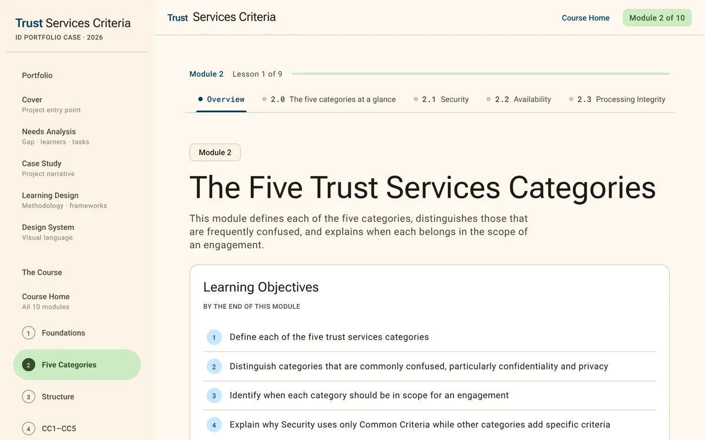
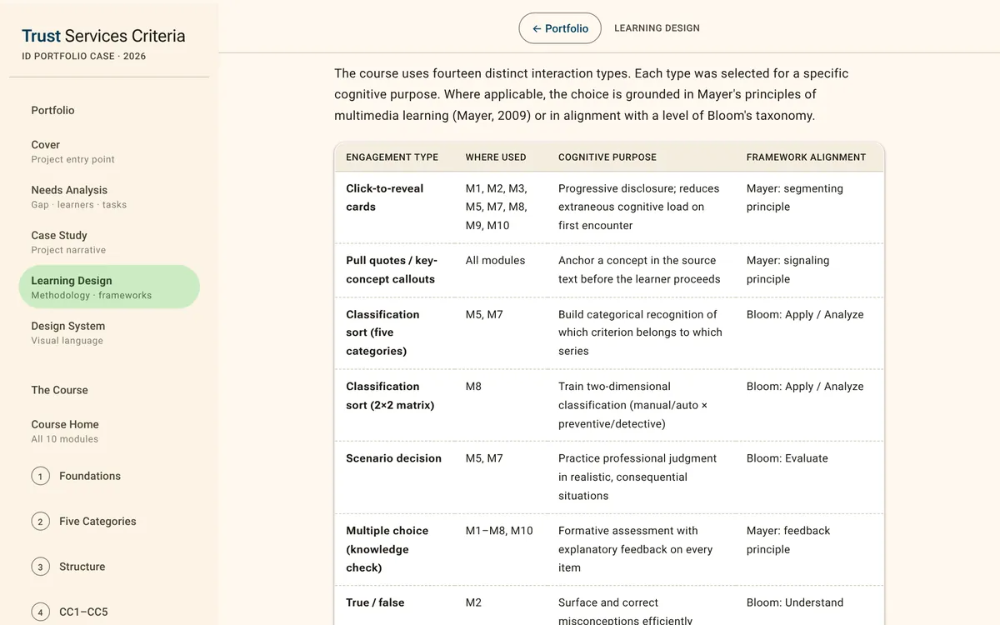

Compliance learning
Trust Services Criteria for GRC Staff
A ten-module self-paced course that prepares governance, risk, and compliance staff to read, interpret, and apply the AICPA Trust Services Criteria, the standard every SOC 2 report is built on.
- Project type
- Self-paced web course with embedded practice
- Audience
- GRC staff and control owners at SaaS service organizations
- My role
- Needs analysis, course architecture, writing, UI and design system, front-end build
- Status
- Independent work sample
- Problem
- The source standard is 75 pages of legalistic prose with 61 criteria and conventions explained only in passing. Staff who learn it from secondhand summaries pick up misconceptions that show up as audit rework.
- Deliverables
- Ten modules (about 10 hours), 93-term glossary, optional capstone, needs analysis, learning design document, design system, case study
- Source
- AICPA TSP Section 100: 2017 Trust Services Criteria with revised points of focus (2022)
- Tools
- Hand-coded HTML, CSS, and JavaScript on a Material Design 3 foundation; single-file deployment with hash routing
What this is. An independent work sample developed from the primary source, without a client organization. The needs analysis is documentary and assumption-based: no interviews, surveys, or organizational records were available, and none are reported. The course is complete; no pilot has run.

The problem
GRC staff are expected to read the criteria accurately, apply them to their organization's system, and produce scoping decisions, control narratives, evidence, and a system description that a service auditor can test. The standard does not make that easy. Its conventions, such as what italic text means or what the [C] and [P] markers on privacy points of focus signal, are explained briefly or in footnotes.
The needs analysis states the gap as typical current performance against desired performance, each tied to a paragraph of the standard. Three examples:
| Area | Typical current performance | Desired performance | Basis |
|---|---|---|---|
| Points of focus | Treated as a mandatory checklist | Criteria treated as required outcomes; points of focus used as guidance and customized where warranted | TSP 100, .04–.07 |
| Control narratives | Describe intent ("access is reviewed regularly") in terms an auditor cannot test | State who, what, when, how, the evidence produced, and how exceptions are handled | TSP 100, .01 |
| Privacy | All privacy points of focus applied regardless of role | Staff determine whether the organization is a controller, processor, or both, and read the markers accordingly | TSP 100, fn. 21 |
AssumedThese describe typical difficulty areas reasoned from the standard and a content review of an earlier draft. They are not measured findings.
Analysis
The needs analysis is the strongest process artifact in this project. It runs twelve sections and draws on four stated sources: a close reading of TSP 100, the tasks GRC staff perform across the SOC 2 cycle, a content gap analysis of an earlier draft of Modules 1 to 5, and explicit assumptions, each paired with a validation method.
Training and non-training causes
The analysis separates what a course can fix (knowledge of the standard, skill in scoping, mapping, and narrative writing) from environmental causes it cannot. For the second group it recommends companion changes: a control-narrative template built on the six elements taught in Module 8, a central evidence repository with a naming convention, a control-ownership matrix, a commitments register kept with legal and sales, and compliance tooling configured around criteria. Without those, transfer is likely to be limited, and the document says so.
Learners and tasks
Three composite learner profiles shaped the design: the new GRC analyst (needs vocabulary and guided practice), the transferring professional from IT audit or security (needs to know what is different, with citations to verify), and the control owner (very limited time, will complete selected modules only). A task analysis rated eleven tasks by frequency, criticality, and difficulty. Tasks rated high on both criticality and difficulty, such as writing control narratives and determining that a criterion does not apply, receive guided practice with explanatory feedback; the rest are supported mainly by worked examples and reference material.
Delivery decision
Instructor-led training would allow organization-specific discussion but needs a facilitator for every cohort and leaves no lasting reference. A job aid alone would help experienced staff but cannot build judgment for scoping or gap assessment. Self-paced e-learning with embedded practice fit the 30 to 60 minute sessions these learners have, let control owners study selectively, and stays available afterward. A one- to two-page job aid is recommended alongside it.

Objectives and alignment
Seven terminal objectives come straight out of the gap analysis and move from understanding the standard to evaluating an organization's readiness. The course home page shows an alignment matrix marking where each objective is introduced, developed, and assessed across the ten modules, and a sequencing map listing what each module builds on.
| Terminal objective | Level | Assessed by |
|---|---|---|
| TO1 Explain the purpose, authority, and structure of the criteria, including criteria versus points of focus | Understand | Knowledge checks in M1 and M3; capstone Section 2 |
| TO2 Determine which of the five categories apply, given service commitments and system requirements | Analyze | Knowledge checks in M2 and M7; capstone Section 1 |
| TO3 Interpret the outcome required by each Common Criterion | Understand | Knowledge checks in M4 and M5; capstone Section 2 |
| TO4 Apply the category-specific and privacy criteria, including controller versus processor | Apply | Knowledge check in M6; capstone Section 1 |
| TO5 Scope an engagement: system boundary, system description, inapplicable criteria | Apply | Knowledge check in M7; capstone Section 1 |
| TO6 Map controls to criteria and write testable narratives with appropriate evidence | Create | Knowledge check in M8; capstone Section 3 |
| TO7 Evaluate readiness through a gap assessment and recommend priorities | Evaluate | Knowledge check in M7; capstone Sections 3 and 4 |
Design decisions
-
Correct the checklist misconception on the first screen
- Design challenge
- The most common misconception among GRC staff is that SOC 2 is a checklist, which drives the over-documentation of points of focus described in the gap analysis.
- Decision
- Frame the whole course around the standard's own outcome-based principle (TSP 100, para. .03) and raise it immediately.
- Rationale
- A misconception left in place through the structural modules would shape how learners read every criterion that follows.
- Implementation
- Section 1.1 opens with the principle. Module 8 returns to it when learners build controls, and Module 10 presents it as one of five mental models.
- Evidence
- A late coverage audit found the principle was not yet anchored in Module 1; a source-cited callout was added there.
-
Sequence structure before application
- Design challenge
- Learners want to get to scoping and control narratives, but those tasks depend on distinctions the standard makes early and quietly.
- Decision
- Order the course in phases: orientation (M1–M2), structure (M3–M5), application (M6–M8), then reference and synthesis (M9–M10).
- Rationale
- The content analysis showed that a learner who has not consolidated the criteria versus points-of-focus distinction (M3) is likely to write narratives that conflate the two in M8.
- Implementation
- Each module card in the sequencing map lists the modules it builds on. Navigation stays free, so transferring professionals can skip ahead.
-
Make the capstone optional and the mental models required
- Design challenge
- The original outline made completion depend on a 15-question capstone scenario. The audience analysis described professionals with little time who would return to the course over weeks.
- Decision
- Reverse the arrangement. The mental models and role-based playbooks became the core of Module 10, and the capstone moved to a clearly marked optional section with a "Skip to course wrap" link.
- Rationale
- Withholding completion behind an optional test would create the resistance the course is designed to avoid, while the playbooks carry the next-day actions learners need.
- Implementation
- Five-question formative checks close Modules 1 to 8. The capstone gives a per-section breakdown so learners can see which areas to revisit.
-
Build Module 9 as a working reference, cited to the source
- Design challenge
- Learners study alongside the job and come back to specific topics later, and a skeptical professional audience needs to verify claims.
- Decision
- Give Module 9 no knowledge check and design it for use after the course, and cite TSP 100 by paragraph throughout every module.
- Rationale
- The needs analysis named post-course reference as a primary need. Paragraph citations let learners check the course against the standard and use it as a citable source.
- Implementation
- A searchable 93-term glossary with badges separating the AICPA's definitions from practice terms, three quick-lookup tables, six source-document cards, and an 18-card flashcard set.
Design and development
Analysis produced the gap table, profiles, task ratings, and objectives. Design set the module structure, the lesson pattern (orientation and key terms, explanation, worked example, activity, checkpoint), and fourteen engagement types, each matched in the learning design document to the cognitive task it supports. A Material Design 3 system with color roles generated from my palette came next, then an iterative build of all ten modules.
Four documented review rounds followed the build:
- Visual breakage at scale. Fixed-size badges crushed multi-word labels and pill-shaped sort tiles turned long sentences into ovals. Flexible sizing replaced fixed dimensions wherever content length varied.
- A CSS collision in the single-file build. A Module 7 rule silently undid the Module 1 fix once the modules were merged. Classes were namespaced, and a rebuild script now checks for collisions.
- Coverage audit. Every numbered paragraph of the standard was cross-checked against the course. Two gaps were closed with source-cited callouts.
- Second audit. Three more source anchors added, and one apparent gap confirmed as already covered in different wording, a reminder that keyword checks produce false negatives.
Selected design artifacts
- Needs analysis (opens in a new tab)
Gap table, training versus environmental causes, learner profiles, task analysis, constraints, success measures, and an assumptions-and-validation plan.
- Alignment matrix and sequencing map (opens in a new tab)
Where each objective is introduced, developed, and assessed, and what each module builds on.
- Learning design document (opens in a new tab)
Bloom's progression by module, the engagement-type rationale matrix, Mayer's multimedia principles as applied, and the evaluation plan.
- Design system (opens in a new tab)
Color roles with measured contrast, type, components, lesson structure, and accessibility measures, including what is still outstanding.
The finished course
Ten modules, from foundations to a synthesis module with role-based playbooks for situations such as a first SOC 2 preparation, an annual cycle, vendor review, and a learner's first 30 days in a GRC role. Learners move lesson by lesson; each lesson ends in a checkpoint whose format varies (complete the statement, highlight, classify, sequence, multiple choice). Feedback is explanatory and the course records no scores. It runs as a single file with deep-linkable sections, so it also works offline and as a bookmarkable reference.


Evaluation
CompletedAccuracy and quality review
- Two coverage audits of the course against every numbered paragraph of TSP 100, with gaps closed and documented.
- Screenshot-based design review for rendering defects, with fixes verified.
- Contrast measured for every text pairing in the design system; focus indicators, keyboard alternatives for every drag interaction, live-region feedback, and reduced-motion support in place. Skip-to-content links are listed as outstanding work.
ProposedEvaluation in a deployment
The learning design document sets out a four-level plan (Kirkpatrick). Level 2 measures are built into the course as knowledge checks and the capstone; aggregation across learners would be the next step. Level 3 uses manager checklists at 30, 60, and 90 days against seven observable behaviors, such as narratives that address all six elements and scope decisions that cite service commitments. Level 4 compares audit findings and fieldwork records across examination periods, against baselines set before release, and reports results as evidence of contribution since training is one input among many.
Status and lessons
Status. Development complete. No pilot or organizational deployment has taken place, and the assumptions in Section 11 of the needs analysis remain to be validated with practitioners.
What I'd change. Pilot earlier: one learner working through Module 1 in the first week would have caught the badge problem before all ten modules were written. Define reaction, learning, behavior, and results measures during design; here the evaluation framework was applied after the build. Keep an accessibility checklist from the start, since contrast and semantic structure are easier to get right as you go.